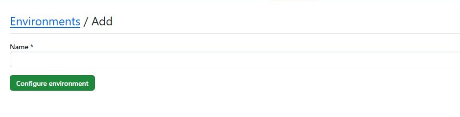
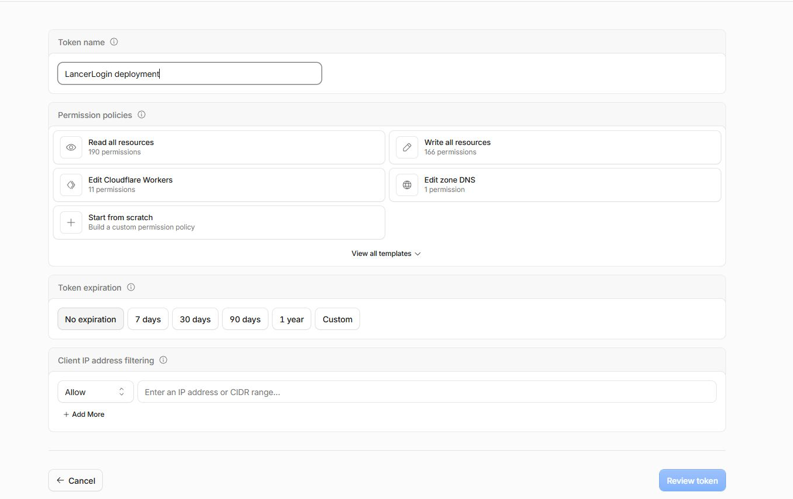
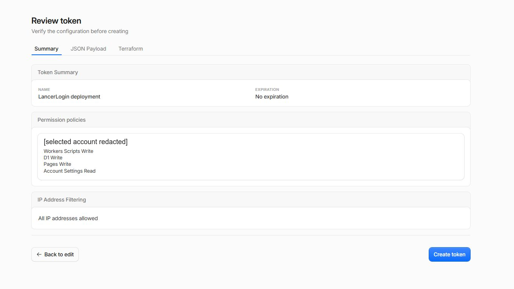
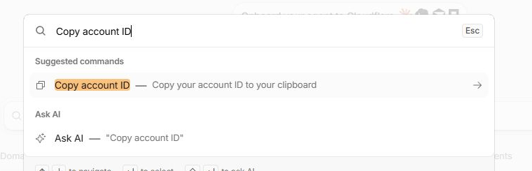
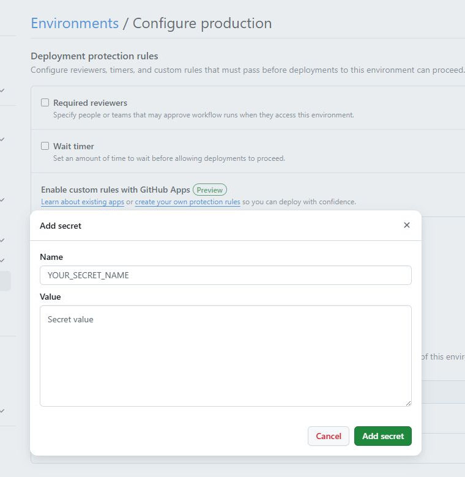

1. Create the private deployment environment
- In the private repository, open Settings › Environments.
- Select New environment, enter the exact name
production, and select Configure environment. - You may add a required reviewer if your GitHub plan supports it. This is optional; do not change branch restrictions during initial setup.

Use the exact name
Enter production. The installer workflow looks for this environment.
Keep the repository private
The workflow refuses to deploy from a public repository, even if secrets are present.
2. Create a narrowly scoped Cloudflare token
- Create or sign in to Cloudflare, then select the account that will own this LancerLogin installation. You must be a Super Administrator of that account to create an account-owned token.
- Open Manage account › Account API tokens › Create Token. If you cannot find this page, use Cloudflare's account API token guide.
- For Token name, enter a descriptive label such as
LancerLogin deployment. This Cloudflare label is only for your reference; it is not the GitHub secret name. - Do not choose Read all resources, Write all resources, Edit Cloudflare Workers, or a template under View all templates. None has the exact least-privilege combination LancerLogin needs. Select Start from scratch.

Name it for humans
LancerLogin deployment makes the credential easy to identify later; any descriptive label works.
Start from scratch
The visible templates are broader or incomplete. Build the four-permission policy below.
Add four account permissions
Keep the resource selector on the selected account, then enable only these permissions:
| Cloudflare permission | Access | Why it is needed |
|---|---|---|
| Workers Scripts | Edit | Deploy and update the API Worker. |
| D1 | Edit | Create the database and apply schema migrations. |
| Pages | Edit | Create and update the dashboard project. |
| Account Settings | Read | Verify that the token belongs to the exact selected account. |
Do not add zone or DNS access. LancerLogin uses the default Pages and Workers URLs. It does not need billing, member, user-management, or domain permissions.
- Choose an expiration appropriate for your organization. If the token expires, replace the GitHub secret before the next update. Leave IP filtering empty unless your GitHub-hosted Actions traffic has a stable approved range.
- Select Review token and compare the summary with the four lines below. Do not continue if any additional permission appears.
- Select Create token, copy the token value immediately, and keep the page open until you have stored it in GitHub. Cloudflare displays the value only once.

Compare all four lines
The review must say Workers Scripts Write, D1 Write, Pages Write, and Account Settings Read.
Copy only after review
The next screen reveals the credential once. Never capture it in a screenshot or commit it to Git.
3. Copy the Cloudflare Account ID
- From any Cloudflare dashboard page, open Quick search or press Ctrl+K (Command+K on macOS).
- Enter
Copy account IDand select the command with that exact name. This copies the selected account's 32-character ID; it is not a zone ID.

Use the command
This avoids hunting through account pages whose layout can change.
Do not copy a zone ID
The installer validates a 32-character account ID against the token before creating anything.
4. Store three GitHub environment secrets
Return to the private repository's production environment. Under Environment secrets, select Add environment secret once for each row:
| Exact GitHub secret name | Value to paste |
|---|---|
CLOUDFLARE_API_TOKEN | The one-time token value Cloudflare just displayed—not its descriptive name. |
CLOUDFLARE_ACCOUNT_ID | The 32-character value copied by Cloudflare's Copy account ID command. |
LANCERLOGIN_SETUP_CODE | A new, unique value of at least 16 characters generated and saved in your password manager. |
Use secrets, not variables. Do not paste these values into a repository file, issue, workflow input, dashboard form, or chat. The setup code protects first-Admin creation; it is separate from the Admin password you will create later.

Name must match exactly
GitHub secret names are case-sensitive. Add all three names from the table.
Values remain masked
GitHub lets you replace a saved secret later but never displays its stored value.
5. Run the private installation workflow
- In the private repository, open Actions › Install or upgrade LancerLogin › Run workflow.
- Choose Create and keep Latest stable selected. The workflow resolves the newest public LancerLogin release automatically.
- Choose a lowercase installation slug using letters, numbers, and hyphens, such as
northside-art-club. It creates exactly<slug>-api,<slug>-data, and<slug>-dashboard. - For confirmation, enter
CREATE <slug>with the same slug, then run the workflow. - The workflow verifies the account-token pair and refuses name collisions before creating anything. When it succeeds, open the Pages dashboard URL from the workflow summary.

Adopter-owned account
The workflow verifies the account-owned token against the exact Account ID saved in GitHub.
Values stay in GitHub
The dashboard never asks for or displays the Cloudflare Account ID or API token.
Preview names first
The slug deterministically names the new Worker, D1 database, and Pages project.
6. Create the first Admin
Choose local username/password, Google OAuth, or both. Local passwords require at least 12 characters and matching password confirmation; they are stored as salted scrypt hashes. The dashboard and API use one Pages origin through a generated proxy, so strict session cookies are not third-party cookies.
For Google, keep LancerLogin open so you can copy its installation-specific redirect URI. Google calls the configuration area Google Auth Platform; its current sections are Branding, Audience, Clients, Data Access, and Verification Center. Google's Google Auth Platform overview defines the same flow.
Choose the project, branding, and audience
- Open Google Auth Platform. Select an organization-owned project, or create one and choose Get started.
- Under Branding, use a recognizable app name such as
Your Organization LancerLogin, select a support email, and add a monitored developer contact email. Google's branding guide explains when a logo, homepage, privacy policy, verified domain, or brand verification is required. - Under Audience, choose Internal only when the project belongs to a Google Workspace or Cloud Identity organization and every intended dashboard user belongs to that organization. Internal apps do not require Google verification. Choose External when users may have personal Google accounts or belong to more than one organization.
- For an External audience, Testing is available for a trial and In production publishes the app for ongoing use. LancerLogin requests only basic identity scopes, so Google's documented Testing exception does not require a test-user allowlist and does not impose seven-day authorization expiry. Workspace administrator policy or Advanced Protection can still block access. Review Google's current Audience and publishing-status choices before deciding.
Keep Data Access limited to sign-in
Under Data Access, add or retain only openid, email, and profile. These let LancerLogin validate identity, verified email, and basic profile information. Do not add Drive, Calendar, Gmail, or another API scope for dashboard sign-in. Google's Data Access guide explains scope management, and its OpenID Connect guide documents this exact basic-identity scope set.
Create the Web application client
- Under Clients, choose Create client, select Web application, and give it a recognizable name. LancerLogin's Worker completes a server-side authorization-code flow; do not create a Desktop app and do not add an Authorized JavaScript origin.
- Copy the exact value shown by your LancerLogin form into Authorized redirect URIs. Google compares the scheme, host, path, case, and trailing slash exactly.
- Create the client, then immediately save the client ID and client secret in your organization's password manager. Google displays a newly created secret only once. Paste both into LancerLogin; never put either value in source code, documentation, screenshots, an issue, or chat. Google's Clients guide covers creation and later secret rotation.
Exact Pages callback pattern › https://<slug>-dashboard.pages.dev/api/auth/google/callback
Replace only <slug> with the installation slug. The first-Admin form and Settings → Integrations already show the complete installation-specific value and provide a Copy button.
Finish the appropriate verification
Google's Verification Center and LancerLogin's integration verification are separate. An External app published In production may need Google brand verification before its chosen name or logo appears; sensitive- or restricted-scope review is not required for LancerLogin's basic sign-in scopes unless you add other scopes. After saving credentials in Settings, use Verify with Google and sign in as an active LancerLogin Admin. LancerLogin marks the integration configured only after Google returns a valid identity for that active Admin.
When Google or both methods are selected during first-Admin setup, enter the first Admin's Google email plus the client ID and secret there. This avoids a first-login dependency. The secret is encrypted before storage and is never displayed again. An Admin can later rotate or remove it under Settings → Integrations; Google cannot be disabled or removed unless an active Admin has a usable local password.

Choose a web client
Create a Web application client for the dashboard rather than a desktop client.
Copy the exact callback
Use the HTTPS Pages origin followed by /api/auth/google/callback.
Enter credentials once
The first-Admin form encrypts both values; saved secrets are never shown again.
7. Choose anonymous usage reporting
Anonymous usage reporting is enabled by default on the first-Admin form. Uncheck it to opt out before creating the installation, or turn it off later under Settings → Privacy. Anonymous usage data only; no roster or user data is ever shared.
8. Finish the guided setup
- Organization and brand
- Initial test meeting
- Roster (email and Discord user ID are optional)
- Pair a Raspberry Pi or the browser simulator
- Test kiosk input
- Confirm test attendance
The wizard temporarily replaces dashboard content and focuses on one task at a time. Every step can be skipped and revisited, and progress is shared across Admins. Confirming the final attendance check plays an accessible celebration; dismiss it to enter dashboard Home. Setup then disappears from primary navigation and remains reachable from Organization settings and Kiosks. Google, Resend, and Discord are separate optional integrations.
9. Upgrade an existing installation
Open Settings → Updates to compare the installed and latest releases. Back up and begin update downloads an entire-installation backup, then opens Actions › Install or upgrade LancerLogin. It never starts a deployment itself. In GitHub choose Upgrade, keep Latest stable selected, enter the same installation slug, and type UPGRADE <slug>. The workflow requires the existing Worker, D1 database, Pages project, and retained Worker secrets; it applies new migrations and redeploys code without replacing D1 data or rotating installation secrets.